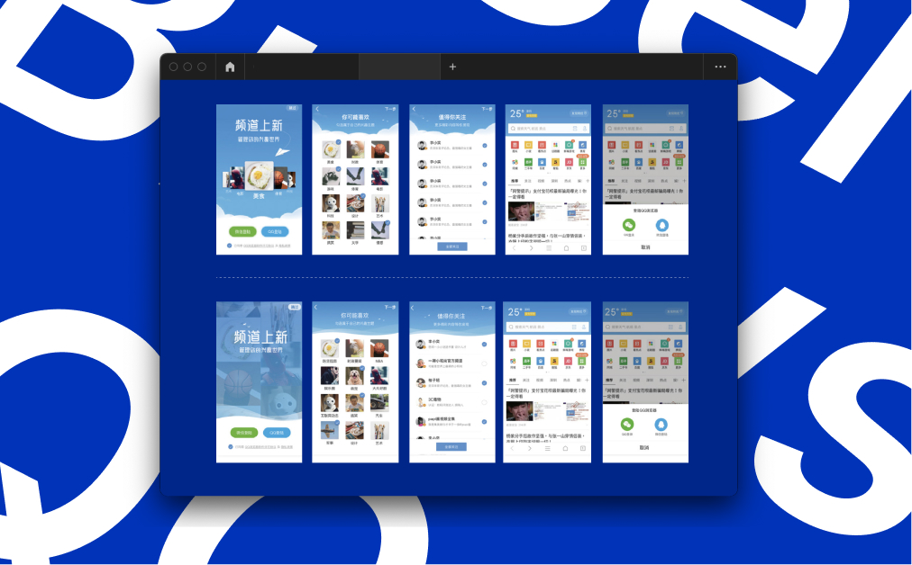
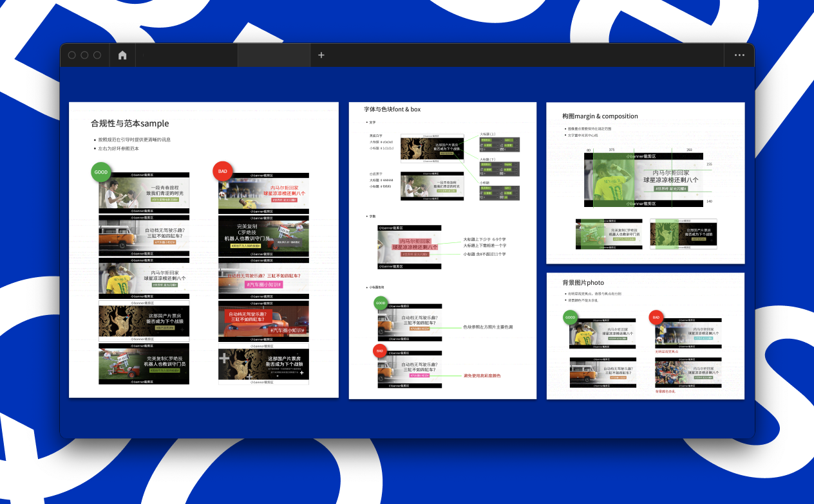
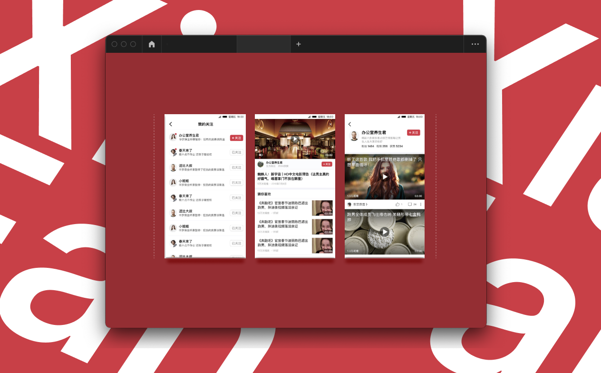
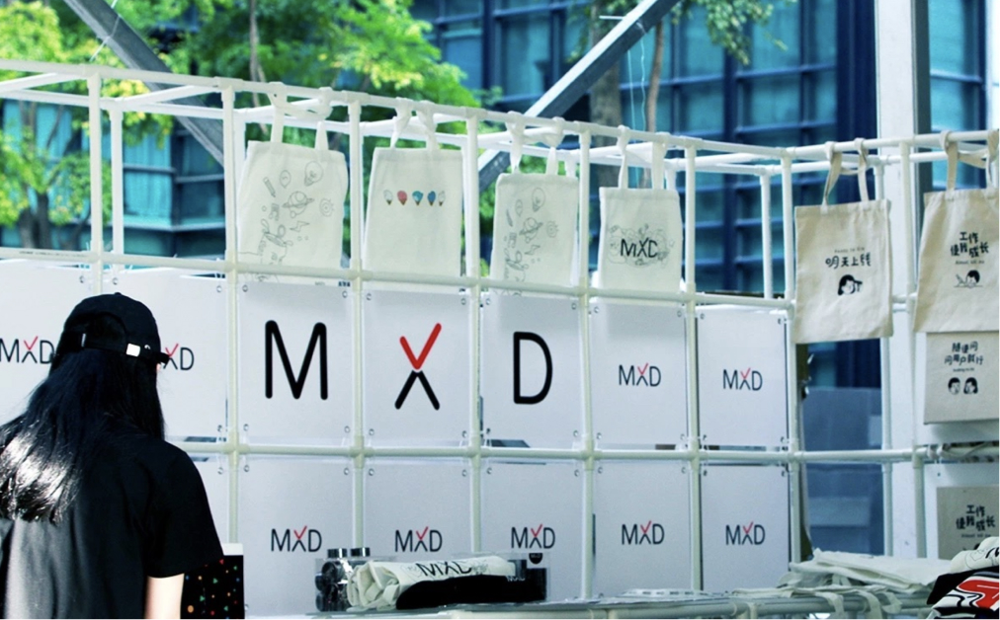
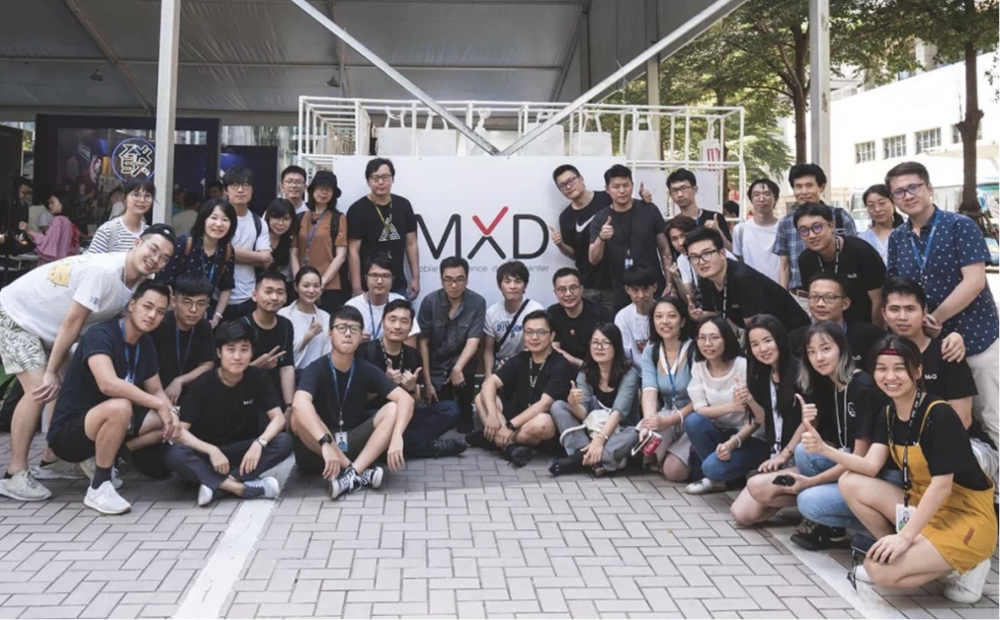

Tecnent MXD intern / 騰訊 用戶體驗設計部
UX & UI
*本文符合公司保密條款，設計過程經過修減，僅露出已上線資訊與公開資料。
*This article complies with the company's confidentiality terms, so the design process has been revised. Only the online information and public information are exposed.
*This article complies with the company's confidentiality terms, so the design process has been revised. Only the online information and public information are exposed.
Worked as a designer in the MXD (Media and Service Platform User Experience Design) department of Tencent in Shenzhen, responsible for supporting the interface design of the QQ browser, the standard construction of Banner, the iteration of the meal video, and one of the planners of the Tencent Designers Week. During the internship, he was awarded an intern Competition Best Prototype Award.
於深圳騰訊的 MXD (Media and Service Platform User Experience Design) 部門擔任設計師，負責支援 QQ 瀏覽器的介面設計、Banner 規範搭建、下飯視頻迭代、騰訊設計師週策劃人之一，實習期間獲得實習生競賽最佳原型獎。
Role
Designer
Collaborators
MXD Team
Duration
2018
Link
MXD designer event >
QQ browser
Responsible for the iterative project of QQ browser, including KOL newcomer guidance iteration in August, banner specification construction, and icon design.
負責 QQ 瀏覽器的迭代項目，包含八月 KOL 新人引導迭代、Banner規範搭建、icon設計。

☝🏻 QQ browser

☝🏻 Banner specification construction
XiaFan Video
XiaFan video App is one of Tencent's strategic products in 2018. Individuals are responsible for iterating the interface, updating the control style, and optimizing the user experience.
下飯視頻是騰訊 2018 年的戰略產品之一，個人負責迭代介面、更新控件樣式，優化用戶體驗。

☝🏻 XiaFan video App
MXD designer week
Tencent Designer Week is an important internal event for the design department, with the purpose of promoting the company's internal and stimulating creativity. I personally act as one of the site planners for the design week, highlighting the brand image of MXD.
騰訊設計師週是設計部門重要的對內活動，目的為促進公司內部，激發創造力。個人擔任設計週場地規劃人之一，凸顯 MXD 的品牌形象。

☝🏻 Desinger week plan

☝🏻 emm.. it took me about 12 hours to set all these things.

☝🏻 MXD family members